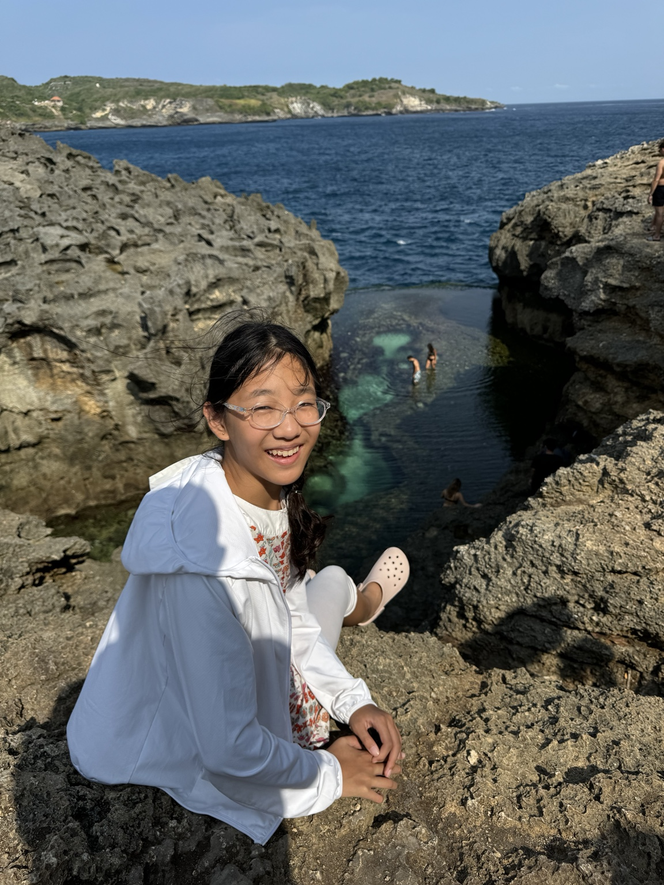
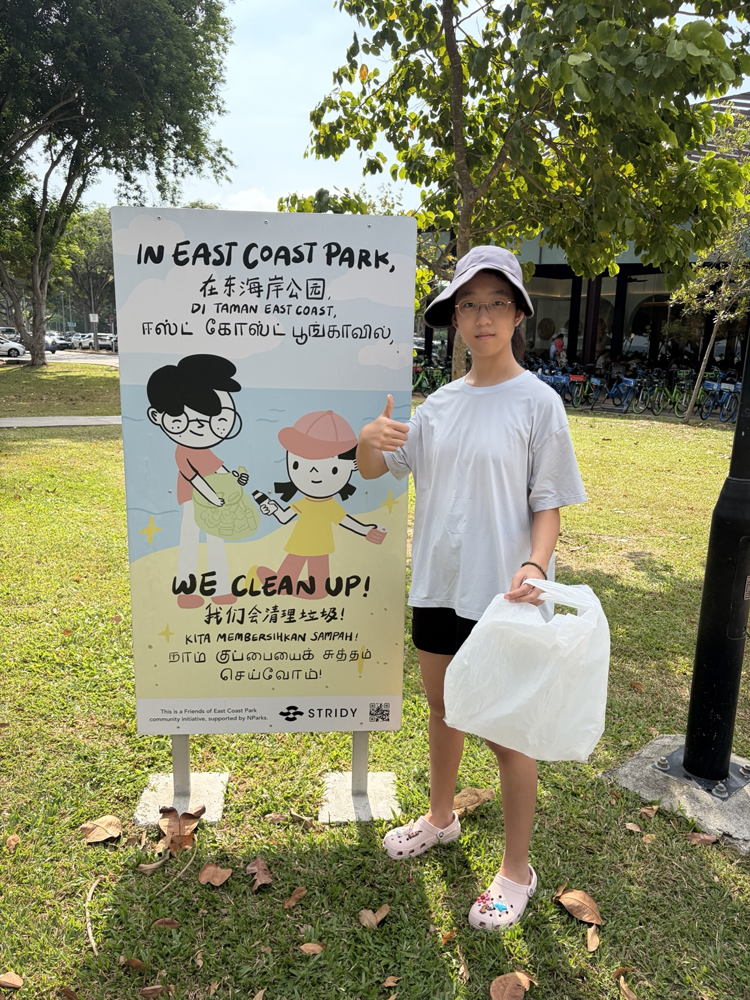

Come discover the amazing creatures living around Singapore! We’ll play, make things, try mini challenges and learn how to be kind to the ocean.

You don’t need to know anything about marine life before you come. Just bring your curiosity.
Meet sea stars, crabs, corals, octopuses and other animals living around our shores.
Which sea creatures can sting, bite or pinch? Learn how to look without getting hurt — or hurting them.
Follow plastic from land to sea and discover something so tiny you may not even see it: microplastics.
Learn to spot clues, record what you find and explore like a little marine scientist.
Parents: the exact condo name and meeting point will be shared privately after registration is confirmed.

I love animals, science and discovering how nature works. I started picking up rubbish on beaches, learned scuba diving and later saw plastic underwater. I also explored microplastics for my PYP Exhibition.
Now I want to share some of the coolest things I have learned with younger kids — and learn new things together too.
Make your guess first. We’ll find out why its name can be confusing.
It may look empty to you — but another animal might need it.
Pick one before you look it up. The answer surprises lots of people.
Saturday mornings · Ages 7–11 · Near Lakeside MRT · Free pilot sessions
The button currently opens Google Forms. Replace it with the student's actual Google Form link before sharing the site publicly.